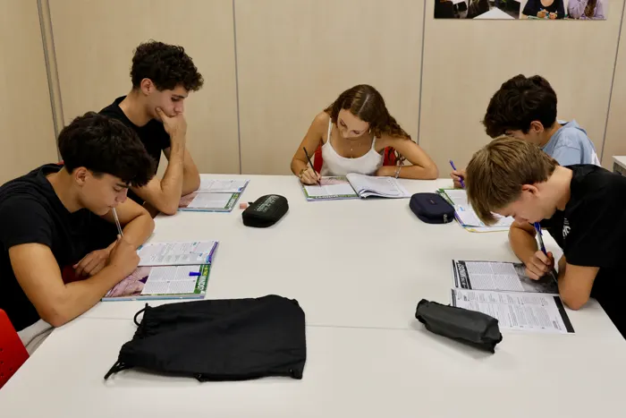
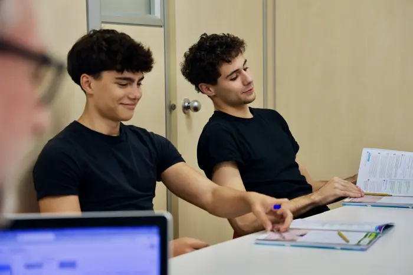
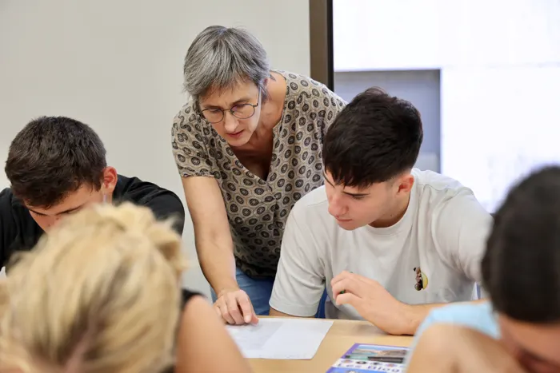
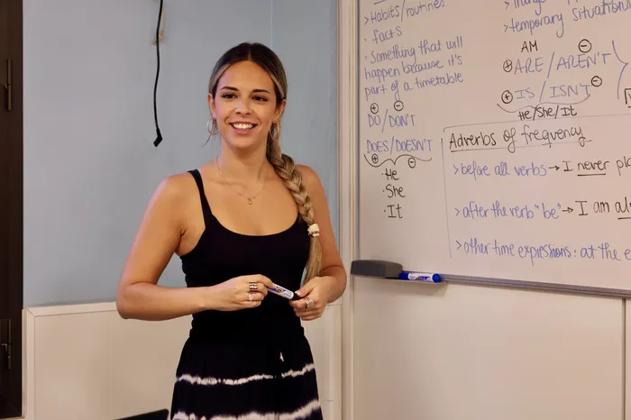

Experts en CambridgeFirst, Advanced i Proficiency
Preparem els alumnes per als exàmens oficials de Cambridge, des del B2 (First) fins al C2 (Proficiency), amb classes especialitzades, grups reduïts i simulacres en condicions reals.
Prepara el teu títol de Cambridge
Fins a 4 convocatòries pels exàmens oficials de Cambridge (març, juny, juliol i desembre). Un certificat Cambridge té validesa per sempre.
B2 First
Acredita un nivell intermedi d'anglès que permet comunicar-te en situacions quotidianes, acadèmiques i professionals. Un certificat que pot obrir-te portes a estudis universitaris, programes de mobilitat internacional i noves oportunitats laborals.
C1 Advanced
Demostra un domini avançat de l'anglès, reconegut globalment, que amplia les teves oportunitats professionals en entorns internacionals i et permet complir els requisits lingüístics de molts estudis universitaris.
C2 Proficiency
El cim de Cambridge. Acredita el nivell més alt de competència lingüística del Marc Europeu, amb un domini excepcional de l'anglès!
Com preparem els exàmens Cambridge?
A Sprint Idiomes, preparem els estudiants per afrontar els exàmens oficials de Cambridge amb una formació pràctica i adaptada a les exigències de cada certificat.
Preparació específica
Treballem les diferents parts de l'examen (Reading, Writing, Listening, Speaking i Use of English) amb estratègies adaptades a cada nivell.
Simulacres d'examen
Familiaritzem els alumnes amb el format de les proves i realitzem exercicis de preparació per afrontar l'examen amb seguretat.
Seguiment personalitzat
Acompanyem cada alumne durant la seva preparació, identificant els aspectes que necessita reforçar. Mantenim una comunicació propera amb les famílies i entreguem informes trimestrals per fer un seguiment del seu progrés.
Professorat especialitzat
El nostre equip docent compta amb una àmplia experiència en la preparació dels exàmens Cambridge. A més, el professorat està supervisat pel cap de departament corresponent per garantir la qualitat de l'ensenyament.




Un cop d'ull a les nostres classes
Grups reduïts de màxim 12 alumnes.
Quan pots presentar-te a l'examen?
Hi ha fins a 4 convocatòries a l'any per als exàmens oficials de Cambridge.
- Gen
- Feb
- MarçExamen
- Abr
- Maig
- JunyExamen
- JulExamen
- Ag
- Set
- Oct
- Nov
- DesExamen
I nosaltres t'acompanyem en tot el procés:
Assessorament sobre l'examen
T'orientem per escollir la modalitat d'examen més adequada (B2 First o B2 First for Schools…).
Gestió de la inscripció
Si ho desitges, ens encarreguem de gestionar la teva inscripció a l'examen oficial.
Entrevista d'orientació
Pots sol·licitar una entrevista amb nosaltres per resoldre dubtes i rebre assessorament personalitzat.
Elecció de la convocatòria
T'informem sobre les convocatòries disponibles i t'ajudem a escollir el moment més adequat per presentar-te a l'examen.
Trobeu l'horari que us encaixi millor
De dilluns a divendres. Tria l'horari que et va millor.
| Nivell | Dies | Hora |
|---|---|---|
| FCE 1 | Dilluns i dimecres | 16:00–18:00 |
| FCE 1 | Dilluns i dimecres | 18:00–19:30 |
| FCE 1 | Dimarts i dijous | 15:45–17:45 |
| FCE 1 | Dimarts i dijous | 18:15–19:45 |
| FCE 1 | Divendres | 16:30–19:30 |
| FCE 2 | Dimarts i dijous | 15:45–17:45 |
| FCE 2 | Dimarts i dijous | 18:15–19:45 |
| FCE 2 | Divendres | 16:30–19:30 |
| FCE Adults | Dilluns i dimecres | 11:00–12:30 |
| FCE Adults | Dilluns i dimecres | 19:30–21:00 |
| CAE 1 | Dilluns i dimecres | 18:30–21:30 (dl) |
| CAE 1 | Dimarts i dijous | 15:45–17:45 |
| CAE 1 | Dimarts i dijous | 19:15–20:45 |
| CAE 1 | Divendres | 16:30–19:30 |
| CAE 2 | Dilluns i dimecres | 16:00–18:00 |
| CAE 2 | Dilluns i dimecres | 18:30–21:30 (dc) |
| CAE 2 | Dimarts i dijous | 19:15–20:45 |
| CAE Adults | Dilluns i dimecres | 9:30–11:00 |
| CPE | Dimarts i dijous | 19:15–20:45 |

Prepara't per a la propera convocatòria Cambridge
Fes la prova de nivell gratuïta i prova una classe, sense compromís